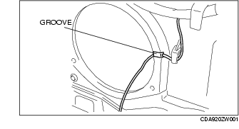

Door speaker removal/installation
1. Disconnect the negative battery cable.
2. Remove the door trim. (See FRONT DOOR TRIM REMOVAL/INSTALLATION.) (See REAR DOOR TRIM REMOVAL/INSTALLATION.)
3. Remove in the order indicated in the table.

4. Install in the reverse order of removal.
Door Speaker Installation Note
1. Attach the speaker with the wiring harness placed in the groove of the door unit panel.

- • If the door speaker is installed with the wiring harness out of the groove, the following malfunctions could occur. Therefore, when installing the door speaker, always be sure the wiring harness is in the groove.